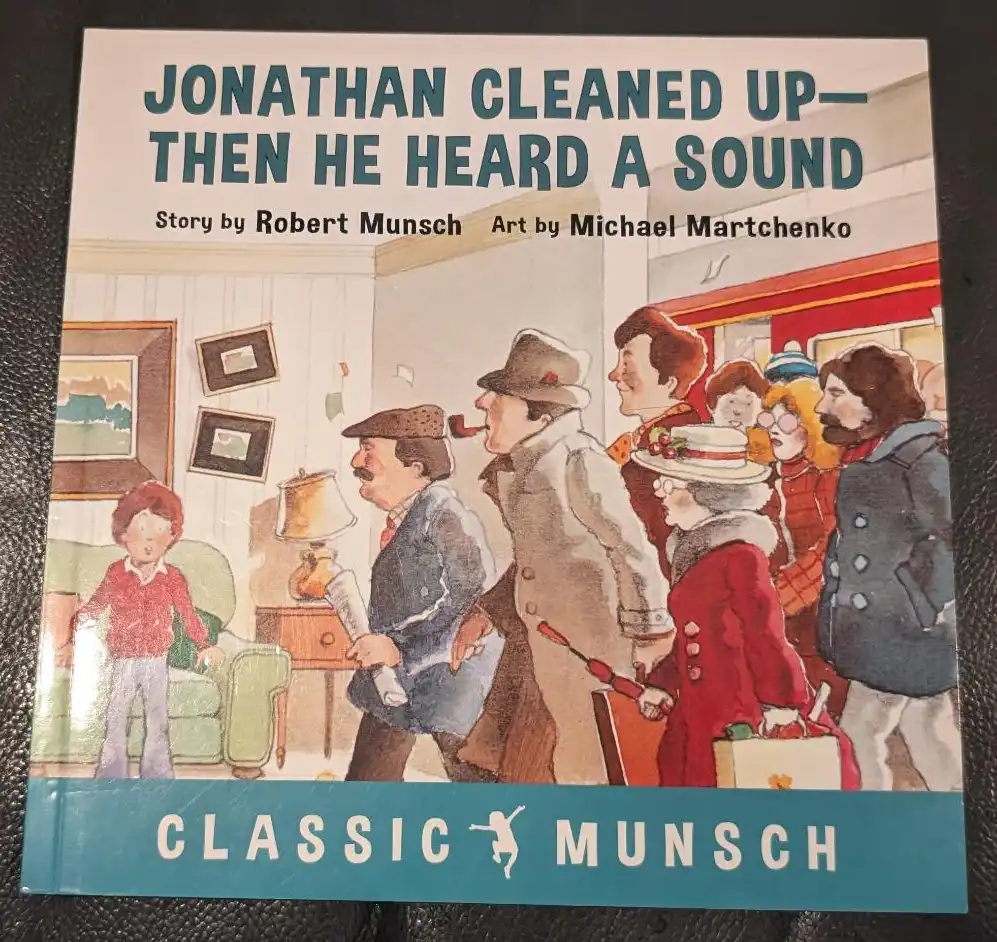

Iggy Peck may have trouble paying attention in school, but he sure doesn't have trouble building things! Join Iggy Peck on his adventures with his class, and find out if he saves the day!
Miss Lila Greer and the Second Grade Class at Blue River Creek Elementary are back! Ada has always loved asking questions and finding answers. Can she find the answer to save the day this time?
All pretending aside, this is one of my favourite children's books in my collection. There is a Rosie the Riveter easter egg, there is social emotional learning, there is complex things for kids, this book has everything. This book is incredibly pro-STEAM in an incredibly accessible way. The only book I have that's better than this one is Ara the Star Engineer, which is about coding and working at Google, but I can't find that one to take a picture of.
Once again, we return to Miss Lila Greer and the second grade class at Blue River Creek. This time, our second grade heroine is plucky girl who is striving for social equity and fairness for all. Democracy is also involved.
Chester and his best friend have a very fun time being best friends. They do everything together, and wouldn't change a single thing about their lives. Then one day, Lily moves in down the street. Can these two friends make room for someone new in their lives, and new ways of doing things?
Before his stuff and fluff became known across the land as Winnie The Pooh, friend of Christopher Robin, there was a real bear in need of a loving family. This bear found her home on the front lines of WWI with a very brave veterinarian. Get your parents their sad storytime kleenex, and get ready to cuddle up and read all about a bear named Winnie.
Jonathan Cleaned Up--Then He Heard a Sound by Robert Munsch

Jonathan's mother asks him to clean up before she leaves to run her errands and right before she gets home, a whole bunch of people walk through the living room and make a huge mess! Will Jonathan's mom believe him?